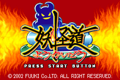

Youkaidou (Japan)
EEPROM 64K gbakit Built-In 💾 MultiBoot 🎮 4P Link
Cartridge Identity
- Game Code
AFUJ(FamilyAFU)- Header Title
YOUKAIDOU- Maker / Revision
BQ/ rev0- ROM Size
- 8.0 MiB (8,388,608 B)
- Save Media
EEPROM 64K- SHA-256
080a70324ee02c0ef850fccec0c2353faff4598e1f18cdf35277f5c05ba3ce06- Engine / SDK Group
comm-055(3 families)
Screenshots

Link Cable & Multiplayer Communications
This title contains detected communication capabilities: 💾 MultiBoot 🎮 4P Link.
Detailed protocol specifications, SIO registers, Joybus commands, and MultiBoot sequences are documented in the Link & Multiplayer Reference.
- Multi-Player SIO (4P)
- 16-bit ring network · SIOCNT (
0x04000128) literals:0x06f244,0x06f37c,0x06f3c0· SIODATA32/SIOMULTI0 (0x04000120) literals:0x06f8a8 - Single-Cart MultiBoot
- Single-Cartridge MultiBoot (Download Play) client/server handler · Thumb SWI 0x25 (
0xDF25):0x10b5a4,0x5678b4,0x5dfddc,0x605c0c
Battery Save Support in gbakit
Built-in definition (AFUJ)
gbakit save verify AFUJ save.sav
gbakit save decode AFUJ save.sav
gbakit save fix AFUJ damaged.sav -o repaired.savROM Assets, Compression & Audio
- BIOS Compression
- LZ77 (
0x10): 0 streams · RLE (0x30): 0 streams - ROM Pointer Tables
- 101 tables (0 pointing to validated compressed streams)
- SDK Backup Tags
EEPROM_V122
Asset Map (formatkit.asset-map.v1)
Download AFUJ-r0-080a70324ee02c0e.asset-map.json.gz (91,066 B (88.9 KiB)) Verified PASS · 9.24% coverage
| Metric | Bytes / Value | Entries |
|---|---|---|
| Identified | 179,420 B (175.2 KiB) (2.14%) | 762 |
| Mapped | 0 B (0.00%) | 0 |
| Opaque | 596,044 B (582.1 KiB) (7.11%) | 1 |
| Unknown | 7,613,144 B (7.26 MiB) (90.76%) | 689 |
| Total ROM Size | 8,388,608 B (8.00 MiB) | 1,452 |
| Coverage % | 9.24% | — |
| Entries w/ Code Refs | 801 / 1,452 (55.17%) | — |
Top Identified Formats: gfx.gba-palette (759 · 127,488 B (124.5 KiB)) · compress.bios-huffman (1 · 50,476 B (49.3 KiB)) · audio.m4a-song-table (1 · 1,264 B (1.2 KiB)) · gba.rom-header (1 · 192 B)
Largest unknown Extents (Headerless / Custom Asset Candidates)
| Offset | Size | Shannon Entropy | Code Refs |
|---|---|---|---|
0x00690D48 | 907,884 B (886.6 KiB) | 7.683 bits/B | 0 |
0x005B3B70 | 905,656 B (884.4 KiB) | 7.837 bits/B | 0 |
0x00558AB0 | 322,452 B (314.9 KiB) | 7.850 bits/B | 0 |
0x000A0C28 | 197,792 B (193.2 KiB) | 7.445 bits/B | 0 |
0x004CC308 | 153,920 B (150.3 KiB) | 4.919 bits/B | 0 |
gzip -dk AFUJ-r0-080a70324ee02c0e.asset-map.json.gz && gbakit map verify rom.gba AFUJ-r0-080a70324ee02c0e.asset-map.json
gbakit assets export rom.gba --asset-map AFUJ-r0-080a70324ee02c0e.asset-map.json -o out/Text, Fonts & Scene Data
- Primary Text Encoding
- Plain ASCII (uncompressed) (
234ASCII strings ·200Shift-JIS runs) - Font & VWF Indicators
- VWF Width Table 1bpp Font · BIOS SWIs: BitUnPack
0x10:4· LZ770x11/12:4· Huffman0x13:0· RLE0x14/15:1 - Scene & Packaging
26ROM pointer tables (≥32 entries,5≥200) ·0relativeu32TOCs ·509OAM metasprite hits
Hardware MMIO Subsystems
ppu_display0x800037c,0x8000bf0,0x8000c20